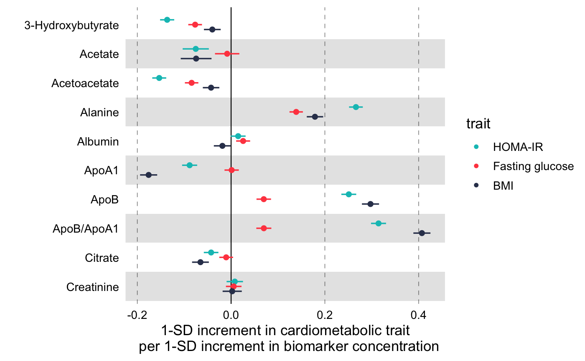
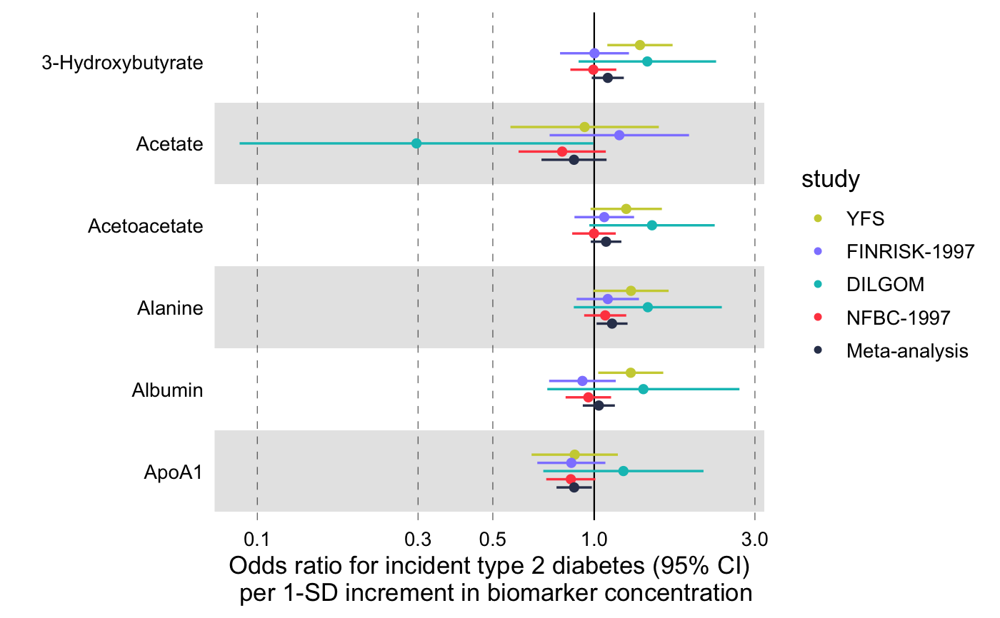
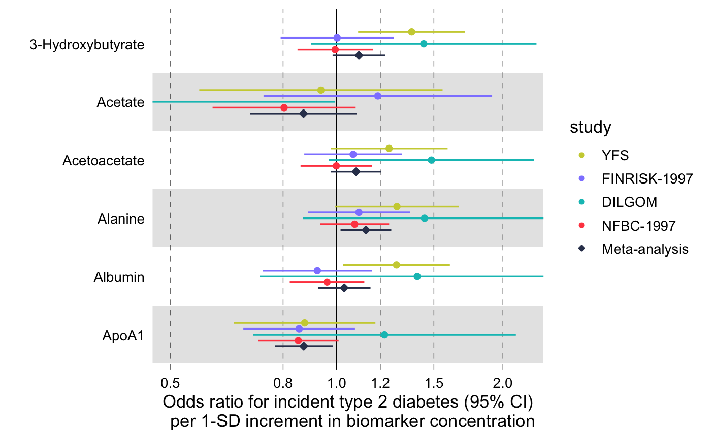

Visualize multiple measures of effect with their confidence intervals in a vertical layout.
forestplot(df, name = name, estimate = estimate, se = se, pvalue = NULL, colour = NULL, shape = NULL, logodds = FALSE, psignif = 0.05, ci = 0.95, ...)
| df | A data frame with the data to plot. It must contain at least three
variables, a character column with the names to be displayed on the y-axis
(see parameter |
|---|---|
| name | the variable in |
| estimate | the variable in |
| se | the variable in the |
| pvalue | the variable in |
| colour | the variable in |
| shape | the variable in |
| logodds | logical (defaults to FALSE) specifying whether the |
| psignif | numeric, defaults to 0.05. The p-value threshold
for statistical significance. Entries with larger than |
| ci | A number between 0 and 1 (defaults to 0.95) indicating the type of confidence interval to be drawn. |
| ... |
|
A ggplot object.
See vignette(programming, package = "dplyr") for an
introduction to non-standard evaluation.
library(magrittr) # Linear associations # Get subset of example data frame df_linear <- df_linear_associations %>% dplyr::arrange(name) %>% dplyr::filter(dplyr::row_number() < 30) # Forestplot forestplot( df = df_linear, estimate = beta, logodds = FALSE, colour = trait, xlab = "1-SD increment in cardiometabolic trait per 1-SD increment in biomarker concentration" )# Log odds ratios df_logodds <- df_logodds_associations %>% dplyr::arrange(name) %>% dplyr::filter(dplyr::row_number() < 30) %>% # Set the study variable to a factor to preserve order of appearance # Set class to factor to set order of display. dplyr::mutate( study = factor( study, levels = c("Meta-analysis", "NFBC-1997", "DILGOM", "FINRISK-1997", "YFS") ) ) # Forestplot forestplot( df = df_logodds, estimate = beta, logodds = TRUE, colour = study, xlab = "Odds ratio for incident type 2 diabetes (95% CI) per 1-SD increment in biomarker concentration" )# For the latter, if you want to restrain the x-axis and crop the large # errorbar for Acetate you may add the following coord_cartesian layer forestplot( df = df_logodds, estimate = beta, logodds = TRUE, colour = study, shape = study, xlab = "Odds ratio for incident type 2 diabetes (95% CI) per 1-SD increment in biomarker concentration" ) + ggplot2::coord_cartesian(xlim = c(0.5, 2.2)) + # You may also want to add a manual shape to mark meta-analysis with a # diamond shape ggplot2::scale_shape_manual( values = c(23L, 21L, 21L, 21L, 21L), labels = c("Meta-analysis", "NFBC-1997", "DILGOM", "FINRISK-1997", "YFS") ) + # Finally, you may want to have full control on the xtick locations, so you # may define them explicitly by overwritting the existing # 'scale_x_continuous()' ggplot2::scale_x_continuous( trans = "log10", breaks = c(0.5, 0.8, 1.0, 1.2, 1.5, 2.0) )#> #>#> #>